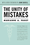

Browse
other Author lists:
A B C
D E F
G H I
J K L
M N O
P Q R
S T U
V W X
Y Z |

|
Bachata
A Social History of a Dominican Popular Music
Pacini Hernandez, Deborah
296 pp • 6x9 • Spring 1995
paper 978-1-56639-300-3
cloth 978-1-56639-299-0 |

|
Oye Como Va!
Hybridity and Identity in Latino Popular Music
Pacini Hernandez, Deborah
238 pp • 6x9 • Fall 2009
paper 978-1-4399-0090-1
cloth 978-1-4399-0089-5
|

|
Passion
and Power
Sexuality in History
edited
by Peiss, Kathy and Christina Simmons with Robert A. Padgug
328 pp • 6x9 • 1989
paper 978-0-87722-637-6
cloth 978-0-87722-596-6 |

|
The
Unity of Mistakes
A Phenomenological Interpretation of Medical Work
Paget,
Marianne A., foreword by Joan Cassell
206 pp • 5.5x8.25 • Spring 2004
paper 978-1-59213-186-0
|

|
A
Complex Sorrow
Reflections on Cancer and an Abbreviated Life
Paget,
Marianne A., edited by Marjorie L. DeVault
176 pp • 5.5x8.25 • Spring 1993
paper 978-1-56639-192-4
cloth 978-1-56639-041-5 |

|
Women
of Japan and Korea
Continuity and Change
edited
by Gelb, Joyce and Marian Lief Palley
320 pp • 6x9 • Fall 1994
paper 978-1-56639-224-2
cloth 978-1-56639-223-5
|

|
The University Against Itself
The NYU Strike and the Future of the Academic Workplace
edited by Krause, Monika, Mary Nolan, Michael Palm and Andrew Ross
280 pp • 6x9 • Fall 2007
paper 978-1-59213-741-1
cloth 978-1-59213-740-4
|

|
Domesticity
and Dirt
Housewives and Domestic Servants in the United States, 1920-1945
Palmer,
Phyllis
248 pp • Fall 1989
paper 978-0-87722-901-8
cloth 978-0-87722-585-0 |

|
Descent
into Discourse
The Reification of Language and the Writing of Social History
Palmer,
Bryan D.
312 pp • Spring 1990
paper 978-0-87722-720-5
cloth 978-0-87722-678-9 |
 |
Incidental Racialization
Performative Assimilation in Law School
Pan, Yung-Yi Diana
220 pp • 6x9 • Spring 2017
paper 978-1-4399-1385-7
cloth 978-1-4399-1384-0
|
| |
Public Financing in American Elections
edited by Panagopoulos, Costas
268 pp • 6x9 • Spring 2011
paper 978-1-4399-0693-4
cloth 978-1-4399-0692-7
|

|
Trilogy of Social Ethics
Orthodox - Catholic - Protestant
Gabriel, Ingeborg G., Ulrich H.J. Körtner and Alexandros K. Papaderos
320 pp • 6x9 • Fall 2013
paper 978-0-931214-16-5 |

|
Mexican
American Women Activists
Identity and Resistance in Two Los Angeles Communities
Pardo,
Mary
322 pp • 5.5x8.25 • Fall 1997
paper 978-1-56639-573-1
cloth 978-1-56639-572-4
|

|
Illegal Migrations and the Huckleberry Finn Problem
Park, John S.W.
278 pp • 6x9 • Spring 2013
paper 978-1-4399-1047-4
cloth 978-1-4399-1046-7
|

|
More Than a Game
Life Lessons from Philadelphia's Sports Community
Shorr-Parks, Eliot, and Steve Parks
266 pp • 6x9 • Spring 2012
cloth 978-0-9840429-0-6 |

|
Revolution By Love
edited by Ghandour, Dala, Emna Ben Yedder, Mohammed Masbah and Steve Parks
194 pp • 5x7 • Spring 2014
cloth 978-0-98404-299-9 |

|
Women,
Employment and Family in the International Division of Labour
edited
by Stichter, Sharon and Jane L. Parpart
288 pp • Spring 1990
cloth 978-0-87722-739-7 |
|
Labor
and Capital on the African Copperbelt
Parpart,
Jane L.
248 pp • Fall 1983
cloth 978-0-87722-325-2 |

|
Blue Skies
A History of Cable Television
Parsons, Patrick R.
816 pp • 6x9 • Fall 2007
cloth 978-1-59213-287-4 |

|
Credit
Where It's Due
Development Banking for Communities
Parzen,
Julia Ann and Michael Hall Kieschnick
288 pp • 5.5x8.25 • Fall 1992
paper 978-1-56639-185-6
cloth 978-0-87722-811-0 |
|
Greening Africana Studies
Linking Environmental Studies with Transforming Black Experiences
Patterson, Rubin
258 pp • 5.5x8.25 • Fall 2014
paper 978-1-43990-872-3
cloth 978-1-43990-871-6 |

|
Zora
Neale Hurston and a History of Southern Life
Patterson,
Tiffany Ruby
248 pp • 5.5x8.25 • Spring 2005
paper 978-1-59213-290-4
cloth 978-1-59213-289-8
|

|
Change
from Within
Humanizing Social Welfare Organizations
edited
by Resnick, Herman and Rino J. Patti, foreword by Ronald Lippitt
350 pp • Spring 1980
paper 978-0-87722-200-2
cloth 978-0-87722-173-9 |

|
Spontaneous
Shelter
International Perspectives and Prospects
edited
by Patton, Carl V.
256 pp • Fall 1987
cloth 978-0-87722-507-2 |

|
Dishing
It Out
Power and Resistance Among Waitresses in a New Jersey Restaurant
Paules,
Greta Foff
225 pp • 5.5x8.25 • Fall 1991
paper 978-0-87722-888-2
cloth 978-0-87722-887-5
|

|
Ecomusicology
Rock, Folk, and the Environment
Pedelty, Mark
242 pp • 6x9 • Spring 2012
paper 978-1-4399-0712-2
cloth 978-1-4399-0711-5 |

|
Behind the Backlash
Muslim Americans After 9/11
Peek, Lori
230 pp • 6x9 • Fall 2010
paper 978-1-59213-983-5
cloth 978-1-59213-982-8
|

|
Cheap
Amusements
Working Women and Leisure in Turn-of-the-Century New York
Peiss,
Kathy
288 pp • 5.5x8.25 • 1985
paper 978-0-87722-500-3
|
|
Passion
and Power
Sexuality in History
edited
by Peiss, Kathy and Christina Simmons with Robert A. Padgug
328 pp • 6x9 • 1989
paper 978-0-87722-637-6
cloth 978-0-87722-596-6 |

|
St. Peter's Church
Faith in Action for 250 Years
Biddle, Cordelia Frances, Elizabeth S. Browne, Alan J. Heavens and Charles P. Peitz
264 pp • 8x10 • Fall 2011
cloth 978-1-43990-795-5 |

|
This Is All I Choose to Tell
History and Hybridity in Vietnamese American Literature
Pelaud, Isabelle Thuy
216 pp • 5.5x8.25 • Fall 2010
paper 978-1-4399-0217-2
cloth 978-1-4399-0216-5
|

|
Challenging
the Chip
Labor Rights and Environmental Justice in the Global Electronics
Industry
edited
by Smith, Ted, David A. Sonnenfeld and David Naguib Pellow, foreword
by Jim Hightower 376 pp • 6x9 • Spring 2006
paper 978-1-59213-330-7
cloth 978-1-59213-329-1
|

|
Policy
and Politics in Japan
Creative Conservativism
Pempel,
T. J.
352 pp • Spring 1980
paper 978-0-87722-250-7
cloth 978-0-87722-249-1 |
|
Theologies
and Liberation in Peru
The Role of Ideas in Social Movements
Peña,
Milagros
240 pp • 5.5x8.25 • Spring 1995
cloth 978-1-56639-294-5 |

|
Ladies and Gents
Public Toilets and Gender
edited by Gershenson, Olga, Barbara Penner
262 pp • 6x9 • Spring 2009
paper 978-1-59213-940-8
cloth 978-1-59213-939-2
|

|
Community Gardening
A PHS Handbook
Pennsylvania Horticultural Society
132 pp • 8.5x8.5 • Fall 2011
paper 978-0-615-40150-8 |

|
The PHS City Parks Handbook
Pennsylvania Horticultural Society
112 pp • 8.5x8.5 • Spring 2011
paper 978-0-615-26081-5 |

|
Law
and the Environment
A Multidisciplinary Reader
edited
by Percival, Robert V. and Dorothy C. Alevizatos
464 pp • 7x10 • Spring 1997
paper 978-1-56639-524-3
cloth 978-1-56639-523-6
|

|
Common
Sense about Police Review
Perez,
Douglas W.
336 pp • 6x9 • Spring 1994
paper 978-1-56639-336-2
cloth 978-1-56639-132-0
|

|
Droppin'
Science
Critical Essays on Rap Music and Hip Hop Culture
edited
by Perkins, William Eric
288 pp • 6x9 • Fall 1995
paper 978-1-56639-362-1
cloth 978-1-56639-361-4
|

|
The
Moral Philosophy of G. E. Moore
Sylvester,
Robert Peter, edited by Ray Perkins, Jr. and R. W. Sleeper,
foreword by Tom Regan
240 pp • Spring 1990
cloth 978-0-87722-645-1 |

|
Perry's Arcana
A Facsimile Edition with a Collation and Systematic Review
Petit, Richard E.
576 pp • 7x10 • Fall 2009
cloth 978-1-4399-0195-3
|
 |
Shaming the Constitution
The Detrimental Results of Sexual Violent Predator Legislation
Perlin, Michael L., and Heather Ellis Cucolo
324 pp • 6x9 • Spring 2017
paper 978-1-4399-1292-8
cloth 978-1-4399-1291-1
|

|
Leadership
in Social Administration
Perspectives for the 1980s
edited
by Perlmutter, Felice Davidson and Simon Slavin
288 pp • Spring 1980
paper 978-0-87722-201-9
cloth 978-0-87722-172-2 |
|
Tortilleras
Hispanic and U.S. Latina Lesbian Expression
edited
by Torres, Lourdes and Inmaculada Perpetusa-Seva
288 pp • 7x10 • Fall 2002
paper 978-1-59213-007-8
cloth 978-1-59213-006-1
|
|
Policy-Planning
Organizations
Elite Agendas and America's Rightward Turn
Peschek,
Joseph G.
288 pp • Spring 1987
cloth 978-0-87722-468-6 |

|
The
Brazilian Sound
Samba, Bossa Nova, and the Popular Music of Brazil
McGowan,
Chris and Ricardo Pessanha
Revised and Expanded Edition
280 pp • 7x10 • Fall 2008
paper 978-1-59213-929-38
cloth 978-1-59213-928-6
|

|
We
Make the Road by Walking
Conversations on Education and Social Change
Horton,
Myles and Paulo Freire, edited by Brenda Bell, John Gaventa
and John Peters
296 pp • 5.5x8.25 • Fall 1990
paper 978-0-87722-775-5
cloth 978-0-87722-771-7
|

|
Philadelphia
Preserved
Catalog of the Historic American Buildings Survey
Webster,
Richard J., introduction by Charles E. Peterson
Spring 1975
paper 978-0-87722-215-6
cloth 978-0-87722-089-3 |

|
Youth Violence
Sex and Race Differences in Offending, Victimization, and Gang Membership
Esbensen, Finn-Aage, Dana Peterson, Terrance J. Taylor and Adrienne Freng
244 pp • 6x9 • Fall 2010
paper 978-1-4399-0072-7
cloth 978-1-4399-0071-0
|

|
Swing
Era New York
The Jazz Photographs of Charles Peterson
Stokes,
W. Royal, photographs by Don Peterson, foreword by Stanley Dance
232 pp • 10x8 • Fall 1994
paper 978-1-56639-464-2
cloth 978-1-56639-227-3 |
|
Storytelling
in Daily Life
Performing Narrative
Langellier,
Kristin M. and Eric E. Peterson
288 pp • 7x10 • Fall 2003
paper 978-1-59213-213-3
cloth 978-1-59213-212-6
|

|
Honey,
Honey, Miss Thang
Being Black, Gay, and on the Streets
Pettiway,
Leon E.
320 pp • 6x9 • Fall 1996
paper 978-1-56639-498-7
cloth 978-1-56639-497-0
|

|
Workin'
It
Women Living Through Drugs and Crime
Pettiway,
Leon E.
304 pp • 6x9 • Fall 1997
paper 978-1-56639-580-9
cloth 978-1-56639-579-3
|

|
Working
Poor
Farmworkers in the United States
Griffith,
David and Ed Kissam with Jeromino Camposeco, Anna García, Max
Pfeffer, David Runsten, and Manuel Valdes Pizzini
368 pp • 6x9 • Fall 1994
paper 978-1-56639-239-6
cloth 978-1-56639-238-9 |

|
Identity
Politics
Lesbian Feminism and the Limits of Community
Phelan,
Shane
256 pp • Fall 1989
paper 978-0-87722-902-5
cloth 978-0-87722-651-2 |
|
Sexual
Strangers
Gays, Lesbians, and Dilemmas of Citizenship
Phelan,
Shane
232 pp • 6x9 • Fall 2000
paper 978-1-56639-828-2
cloth 978-1-56639-827-5
|

|
The
Philadelphia Orchestra
A Century of Music
Philadelphia
Orchestra Association, edited by John Ardoin
256 pp • 9x12 • Fall 1999
cloth 978-1-56639-712-4 |
|
To
Move, To Learn
Witkin,
Kate with Richard Philip, photographs by Ricker Winsor
160 pp • Spring 1977
cloth 978-0-87722-091-6 |

|
Women,
Class, and the Feminist Imagination
A Socialist-Feminist Reader
edited
by Hansen, Karen V. and Ilene J. Philipson
670 pp • Fall 1989
paper 978-0-87722-654-3
cloth 978-0-87722-630-7 |

|
Picturing Model Citizens
Civility in Asian American Visual Culture
Phu, Thy
218 pp • 6.125x9.25 • Spring 2012
paper 978-1-4399-0721-4
cloth 978-1-4399-0720-7 |

|
Breaking
Bread
The Catholic Worker and the Origin of Catholic Radicalism in America
Piehl,
Mel
225 pp • Fall 1982
paper 978-0-87722-353-5
cloth 978-0-87722-257-6 |

|
Courts,
Liberalism, and Rights
Gay Law and Politics in the United States and Canada
Pierceson,
Jason
264 pp • 6x9 • Fall 2005
paper 978-1-59213-401-4
cloth 978-1-59213-400-7
|

|
Hegel's
Dialectic
The Exploration of Possibility
Pinkard,
Terry
272 pp • Fall 1988
cloth 978-0-87722-570-6 |

|
Democratic
Liberalism and Social Union
Pinkard,
Terry
240 pp • Spring 1987
cloth 978-0-87722-458-7 |

|
Fishers
at Work, Workers at Sea
A Puerto Rican Journey through Labor and Refuge
Griffith,
David and Manuel Valdés Pizzini
280 pp • 6x9 • Fall 2001
paper 978-1-56639-911-1
cloth 978-1-56639-910-4
|
|
Working
Poor
Farmworkers in the United States
Griffith,
David and Ed Kissam with Jeromino Camposeco, Anna García, Max
Pfeffer, David Runsten, and Manuel Valdes Pizzini
368 pp • 6x9 • Fall 1994
paper 978-1-56639-239-6
cloth 978-1-56639-238-9 |
 |
Four Germanys
A Chronicle of the Schorcht Family
Pitkin, Donald S., foreword by John C. Torpey
316 pp • 6x9 • Fall 2016
paper 978-1-4399-1343-7
cloth 978-1-4399-1342-0 |

|
In
The Place To Be
Guy Trebay's New York
Trebay,
Guy, photographs by Sylvia Plachy
384 pp • 5.5x8.5 • Fall 1994
paper 978-1-56639-208-2
cloth 978-1-56639-278-5 |

|
Building the Urban Environment
Visions of the Organic City in the United States, Europe, and Latin America
Platt, Harold L.
302 pp • 6x9 • Fall 2015
paper 978-1-43991-237-9
cloth 978-1-43991-236-2
|
|
New
Jack Jocks
Rebels, Race, and the American Athlete
Platt,
Larry
208 pp • 5.5x8.25 • Spring 2002
paper 978-1-59213-191-4
cloth 978-1-56639-954-8
|
|
Borrowed
Time
Artificial Organs and the Politics of Extending Lives
Plough,
Alonzo L.
195 pp • Spring 1986
cloth 978-0-87722-415-0 |

|
Psychology
of Judgment and Decision Making
Plous,
Scott
Spring 1993
cloth 978-0-87722-913-1 |

|
Specular
City
Transforming Culture, Consumption, and Space in Buenos Aires,
1955-1973
Podalsky,
Laura
304 pp • 6x9 • Fall 2003
paper 978-1-56639-948-7
cloth 978-1-56639-947-0
|

|
Global
Energy Shifts
Fostering Sustainability in a Turbulent Age
Podobnik,
Bruce 240 pp • 6x9 • Fall 2005
paper 978-1-59213-294-2
cloth 978-1-59213-293-5
|
|
Paradise,
New York
A Novel
Pollack,
Eileen
288 pp • 5x9 • Fall 1998
paper 978-1-56639-789-6
cloth 978-1-56639-657-8
|

|
More
Philadelphia Murals and the Stories They Tell
Pompilio, Natalie, Jane Golden and Robin Rice, photographs
by David Graham and Jack Ramsdale
160 pp • 9x11 • Fall 2006
cloth 978-1-59213-527-1
|

|
Nothing,
Nobody
The Voices of the Mexico City Earthquake
Poniatowska,
Elena, translated by Aurora Camacho de Schmidt, foreword by
Arthur Schmidt
384 pp • 6x9 • Fall 1995
paper 978-1-56639-345-4
cloth 978-1-56639-344-7
|

|
Trading
Down
Africa, Value Chains, and the Global Economy
Gibbon,
Peter and Stefano Ponte
272 pp • 6x9 • Spring 2005
paper 978-1-59213-368-0
cloth 978-1-59213-367-3
|

|
Philadelphia
Finding the Hidden City
Elliott, Joseph E. B., Nathaniel Popkin, and Peter Woodall
200 pp • 7.875 x 10.5 • Fall 2017
cloth 978-1-4399-1300-0 |

|
How
Holocausts Happen
The United States in Central America
Porpora,
Douglas V.
232 pp • 5.5x8.25 • Fall 1990
paper 978-0-87722-923-0
cloth 978-0-87722-750-2
|

|
Crowding
Out Latinos
Mexican Americans in the Public Consciousness
Portales,
Marco
240 pp • 6x9 • Fall 1999
paper 978-1-56639-743-8
cloth 978-1-56639-742-1
|

|
Chinatown
The Socioeconomic Potential of an Urban Enclave
Zhou,
Min, foreword by Alejandro Portes
316 pp • 6x9 • Spring 1992
paper 978-1-56639-337-9
cloth 978-0-87722-934-6 |

|
Cinemas in Transition in Central and Eastern Europe after 1989
edited by Portuges, Catherine, and Peter Hames
288 pp • 6x9 • Fall 2012
cloth 978-1-59213-265-2 |

|
Hung
Jury
The Diary of a Menendez Juror
Thornton,
Hazel, commentaries by Lawrence S. Wrightsman, Amy J. Posey
and Alan W. Scheflin
200 pp • 5.5x8.25 • Fall 1995
paper 978-1-56639-394-2
cloth 978-1-56639-393-5
|

|
Dilemmas
of Activism
Class, Community, and the Politics of Local Mobilization
edited
by Kling, Joseph M. and Prudence S. Posner
384 pp • Spring 1990
cloth 978-0-87722-696-3 |

|
The
Yankees
An Illustrated History
edited
by Sullivan, George and John Powers
467 pp • 8.5x11 • Spring 1997
cloth 978-1-56639-553-3
|
|
Addressing Violence Against Women on College Campuses
edited by Kaukinen, Catherine, Michelle Hughes Miller, and Ráchael A. Powers
330 pp • 6x9 • Spring 2017
paper 978-1-4399-1376-5
cloth 978-1-4399-1375-8 |

|
Working
Feminism
Pratt,
Geraldine
224 pp • 234x156mm • Spring 2004
paper 978-1-59213-264-5
cloth 978-1-59213-263-8
|

|
The Cubans of Union City
Immigrants and Exiles in a New Jersey Community
Prieto, Yolanda
224 pp • 6x9 • Spring 2009
paper 978-1-59213-300-0
cloth 978-1-59213-299-7
|

|
SLAPPs
Getting Sued for Speaking Out
Pring,
George W. and Penelope Canan
296 pp • 6x9 • Fall 1995
paper 978-1-56639-369-0
cloth 978-1-56639-368-3
|
|
Dewey's Dream
Universities and Democracies in an Age of Education Reform
Benson, Lee, Ira Harkavy, and Puckett, John
168 pp • 5.5x8.25 • Spring 2007
paper 978-1-59213-592-9
cloth 978-1-59213-591-2
|

|
Knowledge for Social Change
Bacon, Dewey, and the Revolutionary Transformation of Research Universities in the Twenty-First Century
Benson, Lee, Ira Harkavy, John Puckett, Matthew Hartley, Rita A. Hodges, Francis E. Johnston, and Joann Weeks
206 pp • 6x9 • Spring 2017
paper 978-1-4399-1519-6
cloth 978-1-4399-1518-9
|

|
Leonard
Covello and the Making of Benjamin Franklin High School
Education as if Citizenship Mattered
Puckett, John L. and Michael C. Johanek
384 pp • 6x9 • Fall 2006
cloth 978-1-59213-521-9
|

|
Extradition,
Politics, and Human Rights
Pyle,
Christopher H.
456 pp • 7x10 • Fall 2000
paper 978-1-56639-823-7
cloth 978-1-56639-822-0
|